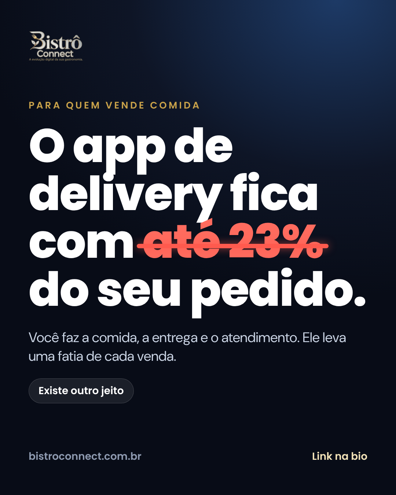
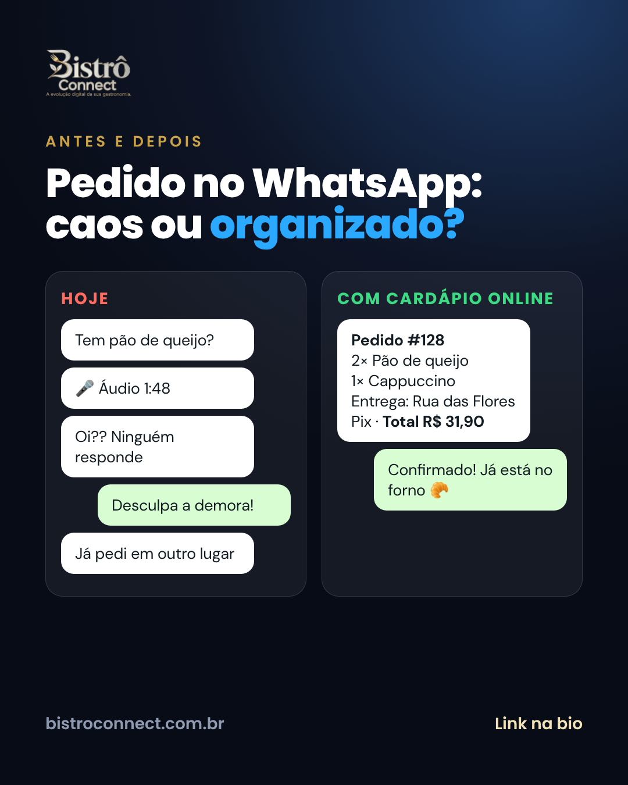
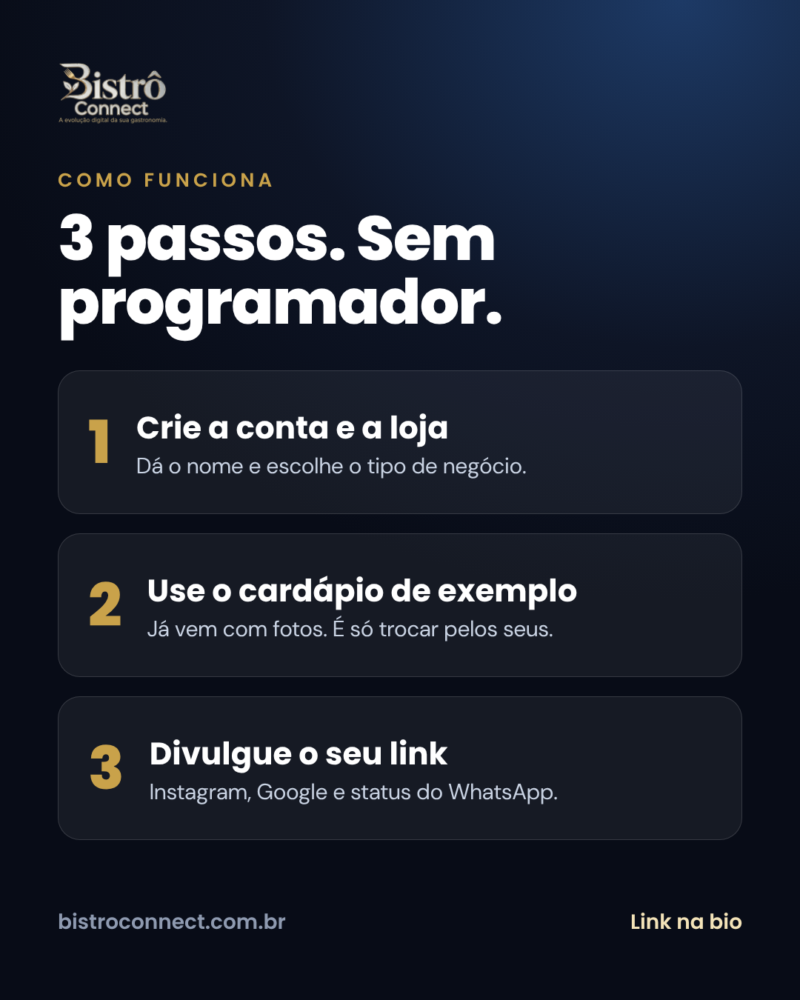

Documento interno · Marketing
Plano de divulgação
Instagram, Meta Ads e Google Ads, com orçamento, metas e regras de parada para o dinheiro não ser jogado fora.
bistroconnect.com.brOutubro de 2026
Instagram, Meta Ads e Google Ads, com orçamento, metas e regras de parada para o dinheiro não ser jogado fora.
Faça o capítulo 01 antes de gastar qualquer real. Os demais seguem a ordem em que você vai executar.
Nenhum plano de marketing é infalível, e quem promete isso está vendendo ilusão. O que este plano faz é reduzir o risco: testa pouco, mede cada etapa, define de antemão quando parar, quando corrigir e quando investir mais. Os números de exemplo são hipóteses para você testar, não promessas de resultado.



Os 6 primeiros posts já estão prontos na pasta kit-instagram, na identidade da marca.
Anúncio em página incompleta desperdiça dinheiro. Os itens “bloqueiam” até estarem feitos.
bistroconnect-ATUALIZACAO.zip), com os temas das lojas, as fotos menores, a imagem de prévia do link e o robots.txt.plataforma-02-admin-por-mes.sql no SQL Editor do Supabase da plataforma.config.js: WhatsApp de suporte (sem ele o botão de WhatsApp da página não funciona), dados da empresa (Termos e Privacidade), e a URL e a chave do site oficial para o CRM.config.js.| Conta | Para quê | Dica |
|---|---|---|
| Instagram profissional (empresa) e Página do Facebook | Perfil e base dos anúncios da Meta | Crie a Página primeiro e ligue o Instagram a ela |
| Gerenciador de Negócios da Meta | Pixel, domínio e contas de anúncio | Use o e-mail da empresa |
| Pixel da Meta e verificação do domínio | Medir cadastros e lojas criadas | Copie o ID (só números) para pixelId. Verifique o domínio bistroconnect.com.br no Gerenciador de Negócios. |
| Google Ads | Campanhas de Pesquisa | Crie a conta no modo “completo”, não “campanha inteligente” |
| Conversões do Google Ads | Medir o que importa | Crie duas: Loja criada (principal) e Pedido de ajuda (secundária). Cada uma gera um rótulo para googleAdsRotuloLoja e googleAdsRotuloLead. |
| Google Analytics 4 | Ver de onde vem o tráfego | ID que começa com G-, em googleAnalyticsId |
| Perfil da Empresa no Google | Aparecer no Google e no Maps | Grátis. Veja o capítulo 08. |
| WhatsApp Business | Atender os leads | Mensagem de saudação, de ausência e etiquetas de funil |
Instale as extensões gratuitas Meta Pixel Helper e Tag Assistant no Chrome. Abra o site, aceite os cookies, crie uma conta de teste e veja os eventos aparecerem (cadastro, loja criada). Se não aparecerem, não ligue o anúncio.
contato@bistroconnect.com.br), usado no SMTP, nos Termos e nos anúncios.A página de vendas, o cadastro, as lojas nos três temas, o painel, o rastreio, o CRM, os Termos e a Privacidade, a medição de Meta e Google e a página por nicho (?para=padaria) já existem e foram testados. O que falta é configuração e conta, não construção.
Quem, o quê, por que ele compra e como o dinheiro entra.
Padaria, cafeteria, hamburgueria, restaurante, pizzaria, doceria e marmitaria, com 1 a 3 lojas, que já vende por WhatsApp e Instagram e/ou paga comissão a app de delivery.
Comissão de até 23% por pedido, WhatsApp lotado de áudio, pedido errado e cliente perguntando “já saiu?”.
Loja online em 5 minutos, grátis até R$ 3 mil em vendas por mês, sem cartão de crédito, com cardápio de exemplo já com fotos.
Vitrines reais nos 3 temas, antes e depois do WhatsApp, a conta do ano e o vídeo do pedido chegando no painel.
| Etapa | O que acontece | Onde você mede |
|---|---|---|
| 1. Atenção | Vê o anúncio, o Reels ou o post | Alcance e visualizações (Instagram e Meta) |
| 2. Clique | Abre a página de vendas do nicho dele | Cliques e custo por clique (Meta e Google) |
| 3. Cadastro | Cria a conta | Evento “cadastro” (Meta e Google) |
| 4. Loja criada | Termina o cadastro da loja. É a conversão principal. | Evento “loja criada” e coluna Origem no /admin/ |
| 5. Ativação | Cadastra produtos e divulga o link | Primeiros passos no painel e vitrine com pedidos |
| 6. Receita | Compra a ajuda, o site completo ou passa de R$ 3 mil e paga a mensalidade | Seu controle de cobrança |
Quem se cadastra no plano grátis não gera receita até vender mais de R$ 3 mil por mês. A receita do começo vem do serviço de ajuda para montar e dos sites completos. Por isso, o anúncio precisa trazer lojas e o seu WhatsApp precisa converter parte delas em serviço. A conta de equilíbrio está no capítulo 10.
Toda peça segue a mesma sequência. Mostre o problema, faça o dono ver a conta e só então apresente a saída.
| Ângulo | Frase-base | Melhor para |
|---|---|---|
| A. A comissão | “O app de delivery fica com até 23% do seu pedido.” | Quem já vende por app |
| B. A conta do ano | “Quem vende R$ 10 mil por mês pelo app deixa até R$ 27.600 por ano em comissão.” | Todos. Convence pelo número. |
| C. O caos do WhatsApp | “Áudio, ‘quanto fica?’ e pedido anotado errado.” | Quem vende só por WhatsApp e Instagram |
| D. O cliente é seu | “No app, o cliente é deles. Na sua loja, o contato fica com você.” | Quem quer fidelizar |
| E. Sem risco | “Grátis até R$ 3 mil em vendas por mês. Sem cartão de crédito.” | Quem tem medo de gastar |
O perfil é a sua vitrine para quem clica no anúncio ou ouve falar. Em 5 segundos ele precisa entender o que você faz e para quem.
| Campo | O que colocar |
|---|---|
| Tipo de conta | Profissional, categoria Serviço de internet ou Software |
| Nome (até 64) | Bistrô Connect | Cardápio Digital (o nome é pesquisável, então leva a palavra-chave) |
| @ de usuário | Tente @bistroconnect. Se estiver ocupado: @bistroconnect.br ou @usebistroconnect. |
| Foto | kit-instagram/avatar.png (o “B” dourado) |
| Link | https://bistroconnect.com.br/?utm_source=instagram&utm_medium=bio |
| Botão de contato | WhatsApp (o do suporte) |
| Destaques | Como funciona · Planos · Lojas · Dúvidas · Comece (capas em kit-instagram/destaque-*.png) |
Publique nesta ordem para o perfil já nascer com cara de negócio sério: 1 dor, 2 conta do ano, 3 solução com o celular, 4 antes e depois, 5 como funciona, 6 chamada. Depois, 1 Reels mostrando a vitrine, 1 Reels do pedido chegando no painel e 1 depoimento (quando tiver).
Crie cada destaque com 3 a 5 stories: Como funciona (3 passos), Planos (a tabela), Lojas (as 3 vitrines), Dúvidas (sem cartão, sem fidelidade, o cliente paga direto a você) e Comece (o link).
Cinco pilares, cinco publicações por semana. Constância vale mais que perfeição.
| Pilar | Objetivo | Formato |
|---|---|---|
| 1. A conta e a dor | Fazer o dono se enxergar | Imagem e Reels curto |
| 2. Como fazer | Mostrar que é fácil | Reels de tela e carrossel |
| 3. Vitrines e antes e depois | Mostrar o resultado | Reels e stories |
| 4. Gestão para dono de comida | Gerar autoridade e salvamentos | Carrossel |
| 5. Oferta e prova | Levar ao cadastro | Imagem, stories e depoimentos |
| Dia | Formato | Tema | Chamada |
|---|---|---|---|
| S1 seg | Imagem | Post 1 do kit: a dor dos 23% | Link na bio |
| S1 ter | Reels | Roteiro 1: “Quanto você paga ao app?” | Comente “CONTA” |
| S1 qua | Imagem | Post 2 do kit: a conta do ano | Salve o post |
| S1 qui | Carrossel | 5 erros do cardápio no WhatsApp | Compartilhe |
| S1 sex | Imagem | Post 3 do kit: sua loja em 5 minutos | Link na bio |
| S2 seg | Reels | Roteiro 2: o pedido chegando no painel | Link na bio |
| S2 ter | Imagem | Post 4 do kit: antes e depois | Link na bio |
| S2 qua | Carrossel | Como montar um cardápio que vende (fotos, nomes, preço) | Salve |
| S2 qui | Reels | Roteiro 3: tour pelo painel | Comente “PAINEL” |
| S2 sex | Stories | Enquete: “Você vende por app, WhatsApp ou os dois?” | Direct |
| S3 seg | Reels | Roteiro 4: loja de padaria, hamburgueria e restaurante lado a lado | Link na bio |
| S3 ter | Imagem | Post 5 do kit: 3 passos | Link na bio |
| S3 qua | Carrossel | Como precificar sem perder margem | Salve |
| S3 qui | Reels | Roteiro 5: por que o cliente é seu e não do app | Compartilhe |
| S3 sex | Stories | Perguntas e respostas (caixinha) | Direct |
| S4 seg | Reels | Bastidores: criando uma loja ao vivo em 5 minutos | Link na bio |
| S4 ter | Imagem | Depoimento ou caso de uma loja de teste (com autorização) | Link na bio |
| S4 qua | Carrossel | Checklist do primeiro dia da loja online | Salve |
| S4 qui | Reels | Resposta a uma dúvida real recebida | Direct |
| S4 sex | Imagem | Post 6 do kit: venda direto, sem comissão | Link na bio |
Grave a tela do celular com o gravador nativo, fale por cima (ou use legenda), e mostre o rosto no primeiro e no último segundo. Legenda sempre, porque muita gente assiste sem som. Fonte grande, 1 ideia por vídeo.
/crm/ quem demonstrou interesse.Duas campanhas simples, três ângulos e muita paciência na fase de aprendizado.
| Campanha 1 · Cadastro no site | Campanha 2 · Conversa no WhatsApp | |
|---|---|---|
| Objetivo | Leads ou Vendas, com conversão no site | Mensagens, com destino WhatsApp |
| Evento a otimizar | No começo: Cadastro completo. Quando tiver cerca de 50 eventos por semana: Loja criada. | Conversas iniciadas |
| Para quem | Donos de comida que querem vender direto | Quem quer ajuda para montar |
| Destino | bistroconnect.com.br/?para=padaria&utm_source=meta&utm_medium=pago&utm_campaign=... | WhatsApp do suporte, com mensagem pronta |
| Orçamento inicial | R$ 20 a R$ 30 por dia | R$ 15 a R$ 20 por dia |
| Criativo | Formato | Ângulo |
|---|---|---|
| Post 1 e Post 2 do kit | Imagem 4:5 | A e B (comissão e conta do ano) |
| Post 4 do kit | Imagem 4:5 | C (caos do WhatsApp) |
| Reels do pedido chegando no painel | Vídeo 9:16, 20 a 30 s | Produto e prova |
| Reels com as três vitrines | Vídeo 9:16 | Visual e identidade |
Pega quem já está procurando a solução. É o canal de maior intenção, e o mais fácil de jogar dinheiro fora sem negativas e sem medição.
| Item | O que fazer |
|---|---|
| Tipo | Pesquisa (Search). Desligue a Rede de Display e a “expansão de pesquisa” no começo. |
| Conversão | Principal: Loja criada. Secundária: Pedido de ajuda. Já estão ligadas na página; falta criar no Google Ads e colocar os rótulos no config.js. |
| Lances | Comece em Maximizar cliques com teto de CPC. Quando tiver de 15 a 30 conversões, mude para Maximizar conversões. |
| Orçamento | R$ 20 a R$ 30 por dia |
| Local | As mesmas regiões da Meta. Opção: “presença” (pessoas na região), não “interesse”. |
| Horário | Das 7h às 22h no começo; ajuste pelos relatórios. |
| Página de destino | /?para=padaria&utm_source=google&utm_medium=cpc&utm_campaign=..., uma por grupo de anúncios. O título muda para falar da mesma coisa que a pessoa pesquisou, o que melhora a nota do anúncio. |
Comece com correspondência de frase e exata. Use a lista como ponto de partida e confirme volumes no Planejador de Palavras-chave.
| Grupo | Palavras-chave (frase ou exata) | Destino |
|---|---|---|
| 1. Cardápio digital | "cardápio digital", "cardápio digital grátis", "cardápio online para restaurante", "cardápio digital para padaria", "cardápio digital para hamburgueria" | ?para=restaurante e as páginas do nicho |
| 2. Pedidos no WhatsApp | "sistema de pedidos pelo whatsapp", "cardápio com pedido no whatsapp", "receber pedidos pelo whatsapp", "loja online para delivery próprio" | ?para=padaria |
| 3. Sem comissão | "delivery sem comissão", "como vender sem pagar comissão de app", "alternativa ao app de delivery", "delivery próprio" | Página principal |
| 4. Cardápio QR code | "cardápio qr code", "cardápio digital qr code grátis" | Página principal |
Anunciar quando alguém pesquisa o nome de outra marca é permitido pelo Google em geral, mas escrever essa marca no texto do anúncio não é, e a resposta do cliente costuma ser ruim. Comece sem isso e só teste depois, com orçamento separado.
Toda semana, abra Palavras-chave › Termos de pesquisa e adicione como negativa tudo que não tenha a ver. É o hábito que mais economiza dinheiro.
O Google combina os títulos e as descrições. Cadastre os 15 títulos (até 30 caracteres) e as 4 descrições (até 90).
| Extensão | Texto sugerido |
|---|---|
| Sitelinks | Como funciona · Planos · Calculadora de comissão · Fale conosco |
| Frases de destaque | Sem comissão · Grátis até R$ 3 mil · Sem cartão de crédito · Pedido no WhatsApp |
| Snippets estruturados | Tipos: Padaria, Cafeteria, Hamburgueria, Restaurante, Pizzaria, Doceria |
| Mensagem / ligação | WhatsApp do suporte |
No começo, estes canais trazem as primeiras lojas e os primeiros depoimentos, enquanto os anúncios aprendem.
| Canal | O que fazer | Meta |
|---|---|---|
| Perfil da Empresa no Google | Cadastre a Bistrô Connect como serviço online. Fotos, descrição, link com UTM e pedido de avaliação. | Aparecer em buscas de marca |
| Seu WhatsApp (status e contatos) | Poste o post 1 e o 3 no status. Avise contatos que têm negócio de comida. | 5 conversas por semana |
| Prospecção ativa no Instagram | Siga e interaja com 10 a 15 negócios de comida da região por dia e envie 5 a 10 directs manuais personalizados (script no capítulo 09). | 3 conversas por semana |
| Lojas de demonstração | Monte uma prévia com o nome e o tipo do negócio do lead, e mande o link. Sem usar fotos dele sem autorização. | Converter conversa em loja criada |
| Contadores e consultores | Ofereça comissão ou reciprocidade a contadores, designers e fornecedores que atendem donos de comida. | 2 parceiros no mês |
| Associações e grupos | Associação comercial, sindicato de bares e restaurantes, grupos de donos de comida no WhatsApp e Facebook. Participe e ajude antes de oferecer. | 1 palestra ou live curta |
| As 3 primeiras lojas “fundadoras” | Ofereça ajuda grátis na montagem em troca de uma foto da loja e um depoimento autorizado. | 3 depoimentos reais |
| Indicação | Quem indicar uma loja que ficar ativa ganha, por exemplo, um mês da sua ajuda. Defina a regra por escrito. | 20% das lojas por indicação |
Não use programas que disparam mensagens em massa no WhatsApp ou no Instagram: o número é banido e a LGPD exige que o contato tenha como pedir para parar. Envie poucas mensagens, manualmente e personalizadas, e se a pessoa disser “não quero”, anote e não procure mais.
Só publique depoimento real, com nome e autorização por escrito (uma mensagem de WhatsApp serve). Nunca invente prova social: além de antiético, pode violar o Código de Defesa do Consumidor.
O anúncio traz o contato. Quem converte é a sua conversa.
| Objeção | Resposta |
|---|---|
| “Já uso o app de delivery” | Continue no app: ele traz cliente novo. A loja é para o cliente que já conhece você pedir direto, sem comissão. Cada pedido que migra é margem de volta. |
| “Meu cliente não vai saber usar” | Ele já chama você no WhatsApp. A diferença é que vê o cardápio com fotos e manda o pedido pronto em poucos toques. Posso te mostrar numa loja de exemplo agora. |
| “Não tenho tempo de montar” | A gente monta junto em 20 minutos pelo WhatsApp, com o cardápio de exemplo que já vem com fotos. |
| “É caro?” | Começa grátis, sem cartão. Você só paga quando a loja vende mais de R$ 3 mil por mês, e a mensalidade tem teto de R$ 199. Sem comissão por pedido. |
| “E se eu não gostar?” | Sem fidelidade, sem multa. Você cancela quando quiser. |
| “Quem recebe o dinheiro?” | Você, direto do seu cliente (Pix, cartão na entrega ou dinheiro). A Bistrô Connect não fica com nada das suas vendas. |
A conta que decide se vale gastar mais ou parar. Os percentuais são hipóteses a validar nos seus primeiros 30 dias.
Gastar em anúncio compensa quando:
custo por loja criada ÷ percentual de lojas que compram serviço ≤ ticket do serviço
Exemplo ilustrativo (os números são hipóteses suas para testar): se cada loja criada custa R$ 40 em anúncio e 15% das lojas compram uma implantação de R$ 300, cada loja gera, em média, R$ 45 de receita de serviço. Resultado: R$ 5 de margem por loja, ou seja, o anúncio quase se paga, e o ganho real vem das mensalidades futuras, das indicações e dos sites completos. Se o custo por loja criada for R$ 120, o anúncio perde dinheiro nesse formato.
| Cenário | Gasto em anúncio | O que fazer | O que esperar |
|---|---|---|---|
| Zero | R$ 0 | Só o capítulo 08, Instagram e Google Business | As primeiras 3 a 10 lojas e os depoimentos. Mais lento, e quase sem risco. |
| Teste | R$ 600 (R$ 20/dia) | Metade em Meta (cadastro) e metade em Google (Pesquisa), mais Instagram orgânico | Dados reais para decidir. Não espere lucro nos primeiros 30 dias. |
| Aceleração | R$ 1.500 (R$ 50/dia) | Só depois de saber o custo por loja criada e a taxa de compra de serviço | Volume maior, se os números do teste fecharem a conta. |
| Métrica | Meta de partida | Como medir |
|---|---|---|
| Lojas criadas (orgânico + pago) | 10 a 20 | /admin/, coluna Origem |
| Pedidos de ajuda | 5 a 10 | /crm/ e WhatsApp |
| Implantações vendidas | 2 a 3 | Seu controle financeiro |
| Depoimentos reais autorizados | 3 | |
| Custo por loja criada (pago) | Descobrir o número real | Gasto ÷ lojas da origem paga |
| Semana | Gasto | Cliques | Cadastros | Lojas criadas | Custo por loja | Ajudas pedidas | Vendas |
|---|---|---|---|---|---|---|---|
| 1 | |||||||
| 2 | |||||||
| 3 | |||||||
| 4 |
O que fazer em cada fase, sem pular etapas.
| Fase | Semanas | O que fazer | Saída da fase |
|---|---|---|---|
| 0 · Preparar | Semana 0 | Capítulo 01 inteiro: contas, medição, config.js, SMTP e teste completo | Tudo medindo e funcionando |
| 1 · Base orgânica | 1 a 2 | Perfil do Instagram, 6 posts do kit, destaques, Google Business, WhatsApp. 10 conversas de prospecção por semana. | Perfil com 9 posts e 5 conversas |
| 2 · Primeiros clientes | 3 a 4 | Convidar 3 lojas fundadoras, atender os leads, coletar depoimentos e fazer 2 Reels de produto | 3 lojas ativas e 3 depoimentos |
| 3 · Teste pago | 5 a 6 | Ligar Meta (cadastro) e Google (Pesquisa) com R$ 20 por dia cada, sem mexer por 4 dias | Custo por cadastro e por loja criada conhecido |
| 4 · Otimizar | 7 a 8 | Cortar o que não converte, acrescentar negativas, trocar criativos, ligar o remarketing | Custo por loja criada em queda |
| 5 · Decidir | 9 a 10 | Aplicar a conta de equilíbrio. Se fechar, aumentar 20% por vez. Se não, voltar à base orgânica e ao serviço. | Decisão de investir ou não |
| 6 · Escalar com controle | 11 a 13 | Novos nichos e cidades, nova rodada de criativos, programa de indicação, Supabase Pro e cobrança organizada | Rotina estável e previsível |
| Dia | O que fazer | Tempo |
|---|---|---|
| Segunda | Preencher o painel semanal, rever anúncios, responder o que sobrou do fim de semana | 45 min |
| Terça a quinta | Postar, responder comentários e directs, prospectar 5 a 10 negócios, atender leads | 40 min por dia |
| Sexta | Termos de pesquisa do Google (negativas), enviar cobranças do mês, planejar a semana seguinte | 45 min |
| Todo dia | Responder lead em até 5 minutos, em horário comercial | — |
Três coisas: a oferta (sem comissão, grátis até R$ 3 mil), a velocidade de resposta ao lead e a prova (lojas reais e depoimentos). O anúncio só amplifica o que já funciona.
Marque tudo antes de ligar o primeiro anúncio.
02-admin-por-mes rodado e SMTP funcionando.config.js com WhatsApp, empresa, Pixel, Google Ads (ID e 2 rótulos), Analytics e CRM.Com a lista toda marcada, ligue as campanhas com o orçamento do cenário Teste, não mexa por 4 dias e siga a rotina semanal. Me mande os números da primeira semana que eu te ajudo a ler.